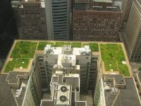

 Living Roofs are human-made vegetated areas on the top of buildings that entail a number of social a environmental benefits.
Living Roof systems, also called Green Roofs or Sky Gardens, date back to the pre-mediaeval days in Europe when sod roofs in Scandinavia were commonly used to keep country homes warm and dry. In fact it could be claimed that the oldest surviving green roof is on New Grange, county Meath in Ireland.